-
One Stop
2016 Website Research Prototyping
OneStop is a recruiting site for employers to hire candidates through job posting, on campus events and manage relationships with schools. I’ve been the UX designer for it since 2013.
As UX designer in the agile team, I am now responsible for defining every sprint scope, writing user stories, conducting user researches and creating prototypes to communicate among team members.
The project is big as a whole, thus here I will just pick one recent release to demonstrate.
Overview
The main function in OneStop is allowing recruiters to post their job to multiple OneStop network schools and manage applicants in one place. The job posting flow has several steps: and now the step 2 to select target schools has the lowest conversion rate, and our goal of this sprint is to higher the conversion rate.
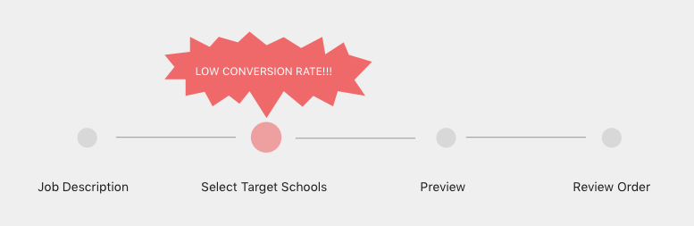Identify Problems
To identify why the conversion rate is so low, I used several methods: 1. Set up an in page survey question which pop-outs when user quit this page; 2. Run another survey to send out to all current users about how they select schools; 3. Scheduled 6 interviews to observe how people actually use the current system.
Here’re main problems I found:
- 1. Users select schools they once worked with, they don’t research schools here;
- 2. Users care about location and program filters that we don’t make it easy to use
- 3. Users don’t need our recommendations or help to do the research of a school on this step
- 4. Users are confused by the pricing because it is complex and hidden at the corner.
Redesign
With the problems found, I started to redesign this page. Here are several steps I took:
- 1. Create initial wireframes and present to teams to iterate;
- 2. Finalize several versions and test with users to settle down with 1 version;
- 3. Create Google analytics goals for the new design;
- 4. Present to the team of the final decision and implementation.
Here’s the final wireframe with rationales behind it.

Here are the final mockups comparisons


-
Recruiter App
2016. Mobile App. UX. Prototyping
Recruiter app is designed for recruiters to do recruit activities on the go, making their recruiting experience more seamless. They can easily post jobs, check applicants and reach out to applicants easily through this app.
At the beginning phase, we sent out surveys to learn how many people actually use mobile apps to conduct recruiting activities. The feedback told us people are strongly interested to see new applicants, share applicants and reach out to applicants through their mobile devices. Based on these demand. We started to decide the MVP of this project and I started to create wires for the app. Below is the user flow for the first phase’s MVP.
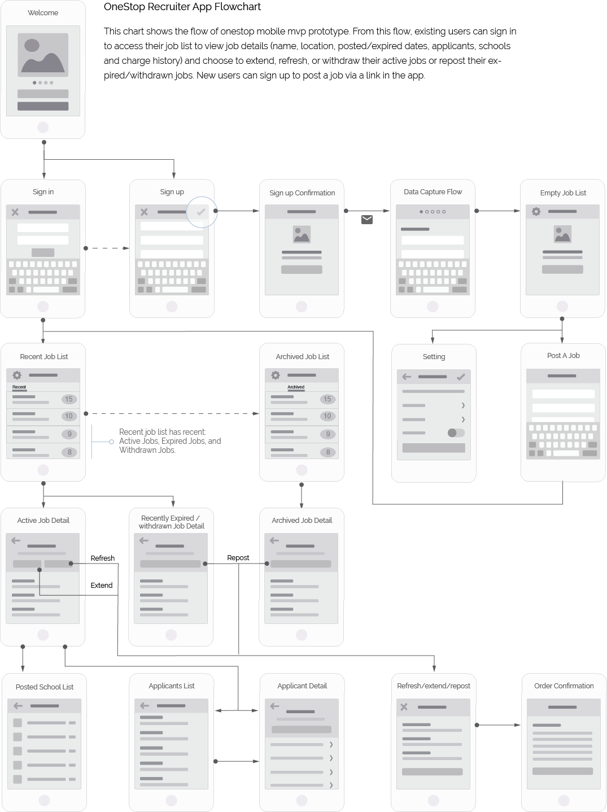Below is the screenshots of the app. And the app is now available in both app store/Google Play to download.
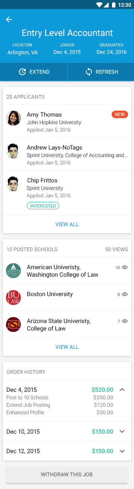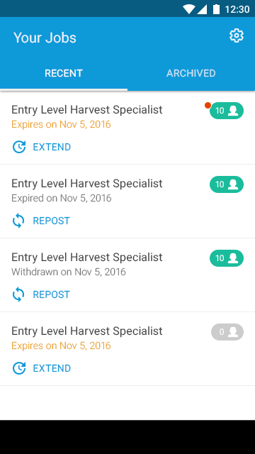
-
Goodnight
2016. Mobile App. UX. Prototyping
This is an app designed to help people have a good sleep in white noise and set alarm of awaking time. In this design, I was mainly responsible for initial sketch, and high-fidelity mockups.
Here are some of the sketches:

Here are the mocks:
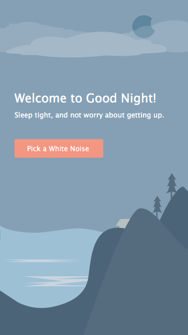


-
Advocate Dashboard
2016. Website. UX. Prototyping
The problem
Advocate is a website service built for schools admins to be alert of on campus security events and deal with students involved. There are many types of admins in the system, while the current system’s dashboard shows very general information, not relevant to any type of role. Thus we wanted to redesign it to be more usable for all users and customize it to be relevant to specific types of users.
Method
1. Survey The 1st round research we used survey to ask their current usage of current dashboard and wish list for dashboard features.
2. 1st round Interview In order to learn more about the users’ daily routine of using Advocate and provide shortcut from dashboard, we selected 6 admins from different universities to do user interviews. From this interview we learnt: All users check new issues and issues assigned to them first All users check their calendars to see to-dos that due today All users like to use recent items Some users want to see a summary analytics of history data Based on these feedbacks, I generated the initial prototype and reviewed internally with our design/development team.
3. 2nd round interview To make sure things meet people’s expectation, we scheduled this 2nd round interview with the same set of users from 1st round interview. All users feel the new dashboard is quite useful to them and they all commented on some details about rearrange things based on relevancy. Based on these, I refined prototype and our team is confident to start implement the new dashboard. Below is the final solution
-
Antidote
Antidote was a 1-week competition hosted by 18F. In this project, I was responsible for UX and UI design. My work included utilizing surveys and interviews to get initial requirement, generate prototypes and deliver final prototypes based on usability tests, create high-fidelity mockups and quality assurance the final implementation. Due to a bunch of reasons we didn’t get the prize but in this project we’ve all experienced very agile and fun teamwork.
The problem
The problem raised by 18F is to use FDA’s medication data to present the data in a meaningful way.
The progress
Look at the FDA’s database together and analyze what data we have; All team members sketch in 15 minutes and vote for the best; Create surveys to get people’s demand; Pick target users to interview; Generate prototype; User test with the people interviewed to see if meet their expectation; In the meantime review within team to get feedback; Iterate prototype based on feedback from both sides; Confirm prototype with testers and team and finalize version; Deliver to dev team and start to create mockups.
The solution
Based on the database and interview with people. We finally landed on designing a website that provides medication data for patients to view the medication information and add their review to it, like a medication yelp.
 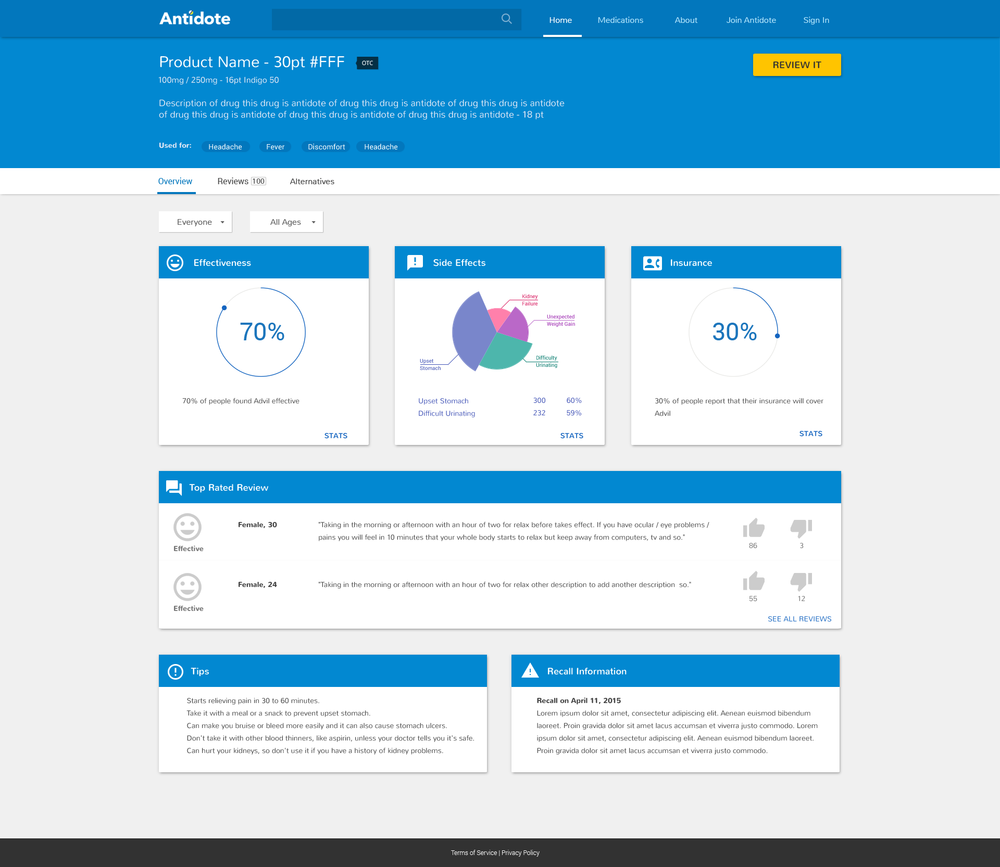
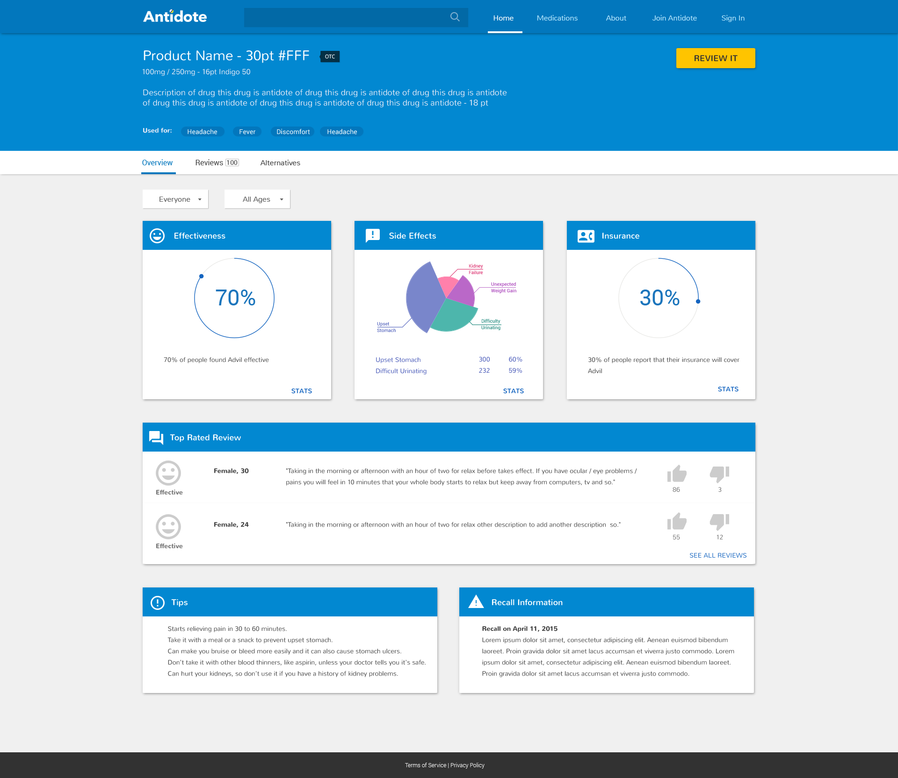 -
Swipe Right
Swipe right was a mobile app designed and implemented in 24 hours in Symplicity’s hackathon competition. In the 24 hours, I was the ideal initiator and also responsible for the user flow design and UI.
The problem and solution
The mobile engagement is quite low in the current student apps and employer apps. So I came up with this idea to raise the engagement. The app utilized swiping right/left gesture to quickly sort content into like/dislike in the job-hunting area. The app has two groups of target users: active job seekers and recruiters. For active job seekers, they can swipe right to like job and swipe left to dislike. For recruiters, they can swipe right to like an applicant and swipe left to dislike it. It’s a quick way for them to sort out content on the go.
Here are some mocks for it:
 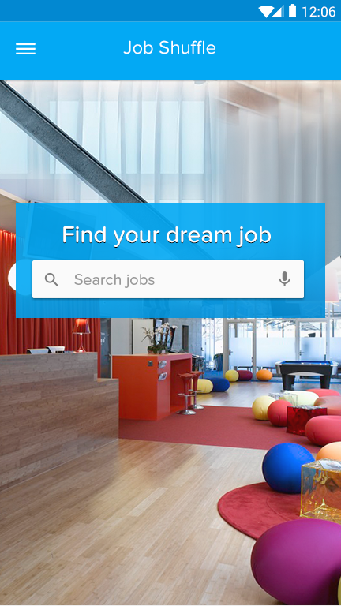
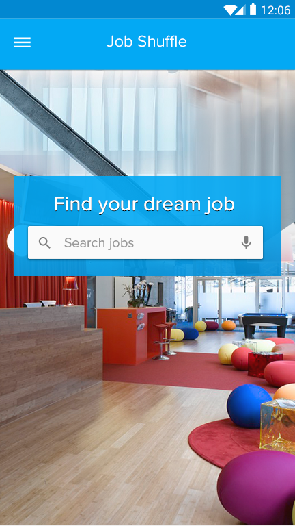
 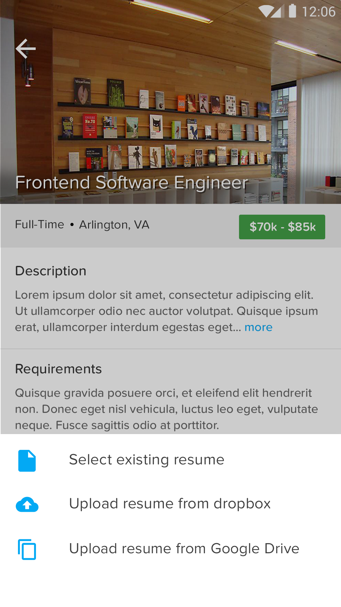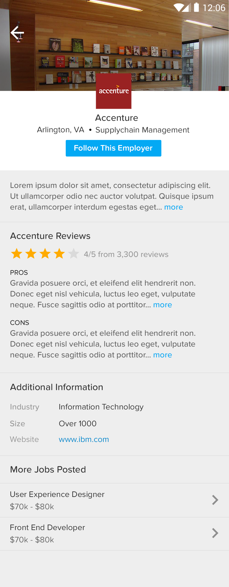
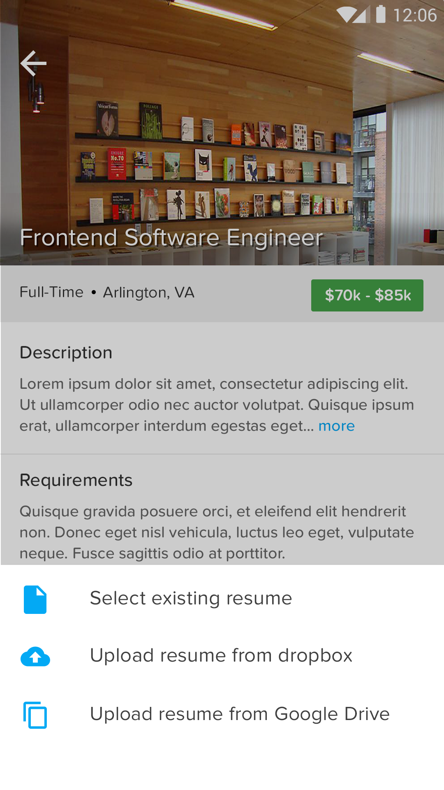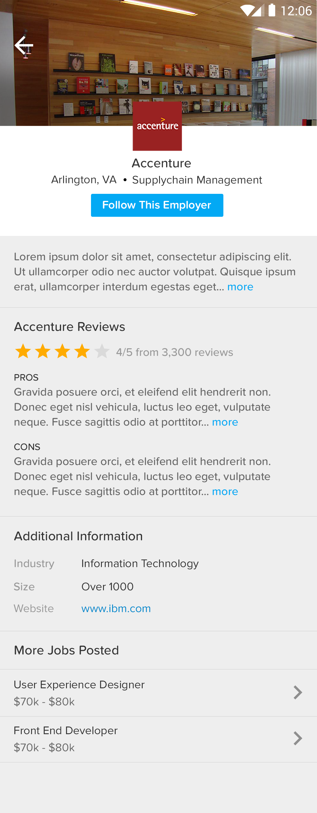 -
Safe and Sound
Safe and sound was an app designed and implemented in 24 hours in AT&T’s Hackathon Competition and won the 2nd prize. I was responsible for the UX/UI design for this competition.
The problem and solution
When people are in dangerous situation, there’s no way for police to quickly locate them and deal with the cases. So we utilized the Bluetooth in mobile phones to let people report their situation and let police quickly locate the incidence and take actions.
Below are mocks for both target user groups:
-
SympLink
Symplink was a web app designed and implemented in 24 hours in Symplicity’s hackathon competition and won the 2nd prize. In the 24 hours, I was responsible for designing user flow with prototypes.
The problem and solution
Symplicity has many high education products, but each one was isolate, students need to login to each one to see updates. So solve this problem, we came up with this central notification center. Students only need to login once and see all the updates here and filter if needed. They can also easily access to the relevant app through each notification if needed.
Here are the wires created: